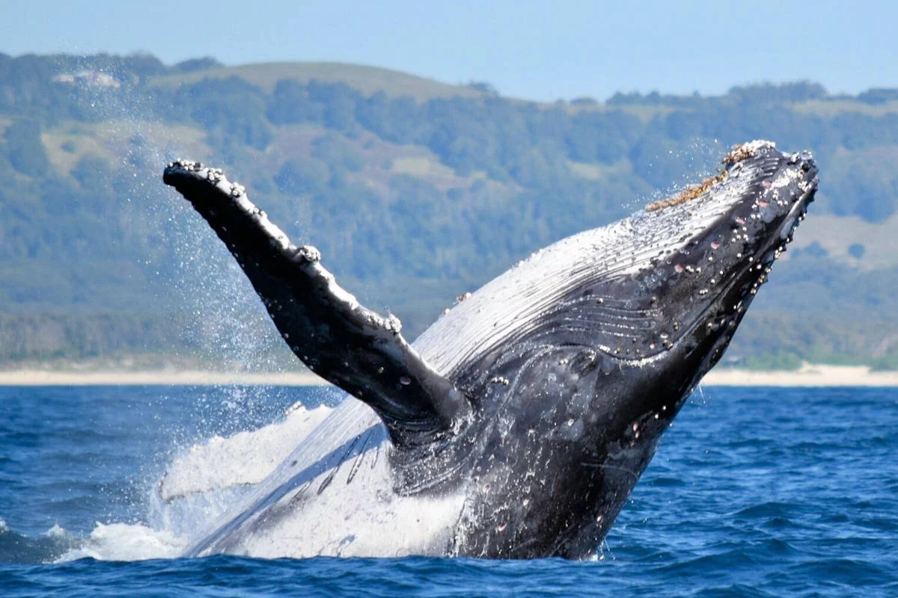
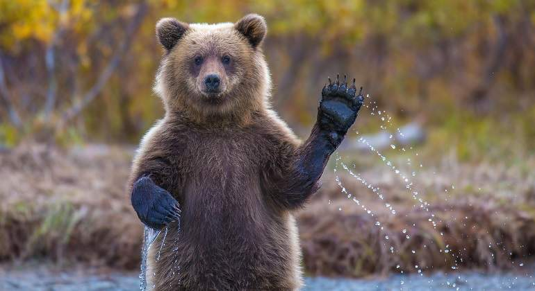
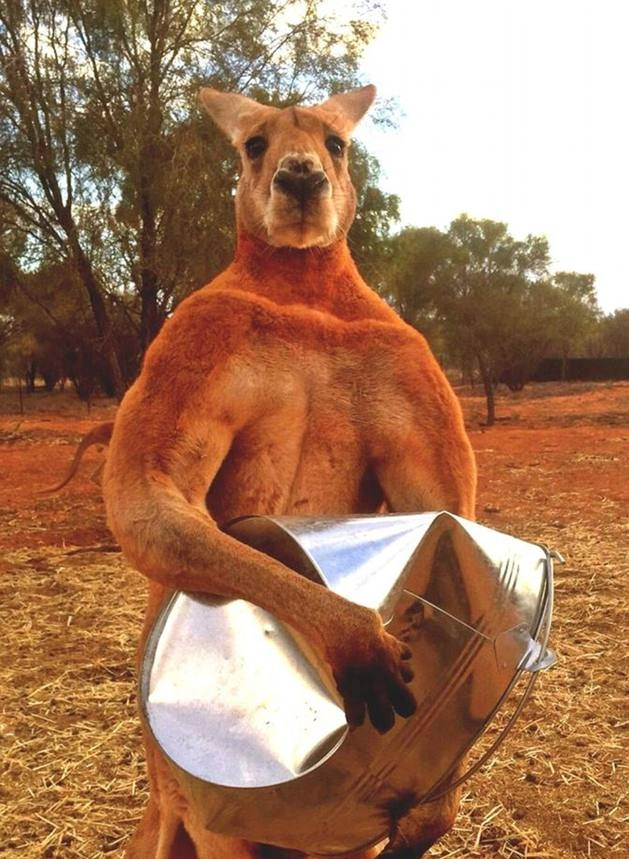
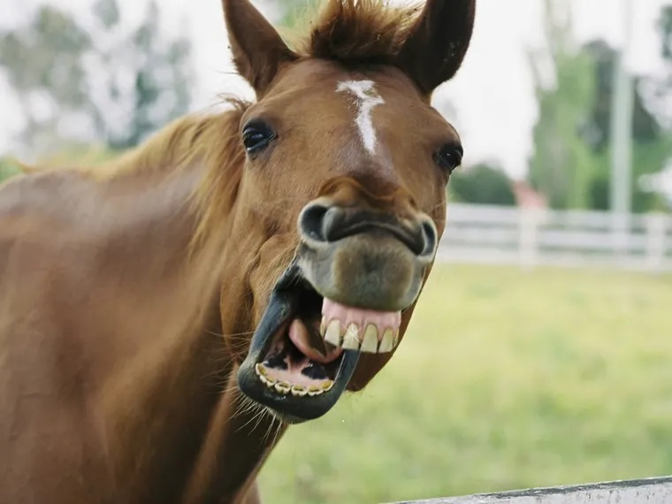
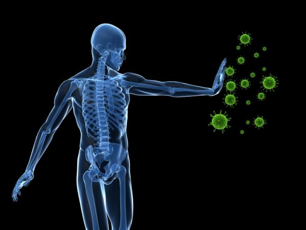
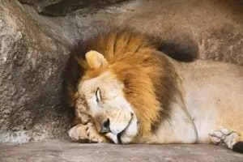
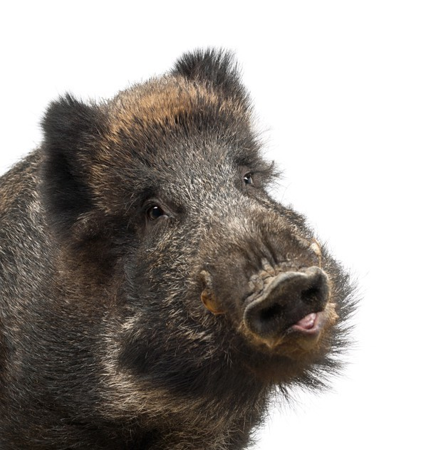
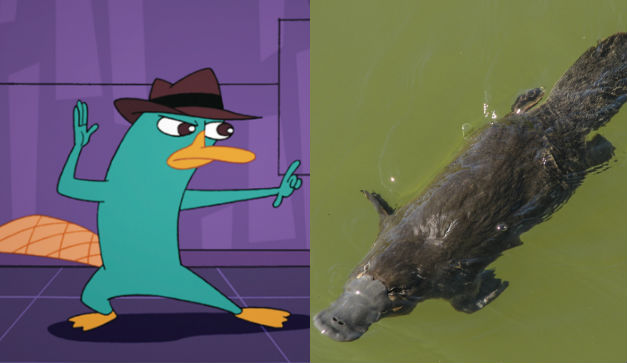
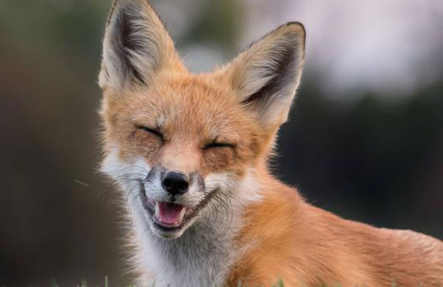

| Balaenoptera musculus |
Ballena Azul |
Balaenopteridae |
Altura:25m
Peso:170000kg |
-Carnívoro: Principalmente de krill. Aunque con una flora intestinal muy similar al
de un hervíboro terrestre. |
- Piel
- Unas 350 barbas bocales que permiten la evacuación de agua al embestir cuando se alimentan.
- Cuatro aletas, dos laterales, una dorsal y la cola.
|
De color gris azulado a lo largo del dorso y más claro por el vientre. Durante más
de 40 años fueron cazadas hasta casi su extinción, lo cual produjo una necesidad de
ser protegidas desde 1966. Cuando respiran, en la superficie, emiten un denso y espectacular
chorro de vapor de agua que alcanza una altura de unos 10 metros. |
 |
| Tursiops truncatus |
Delfín Común |
Delphinidae |
Altura:3m
Peso:500kg |
-Piscívoro: Peces e invertebrados, adoran los calamares... |
- Piel dura pero suave por el cuerpo al completo
- Cuatro aletas, dos laterales, una dorsal y la cola
- Mandíbula de unos aproximadamente 100 dientes
|
Estos animales son muy sociales e inteligentes. Consiguen llegar a los 35km/h de velocidad
máxima, aunque su velocidad media es de unos 9km/h. Suelen formar parte de una manada
de unos 12 ejemplares. |
 |
| Ursidae |
Oso |
Ursidae |
Altura:2.4m
Peso:480kg |
-Omnívoro: Hojas, bayas, insectos, carroña, carne fresca, pescado... |
- Pelaje largo y espeso
- Dentadura no especializada, con caninos elongados
- Zarpas con cinco dedos provistos de uñas fuertes
|
Poseen un desarrollado sentido del olfato, aunque les fallan la vista y el olfato.
Son grandes, fuertes y fieros. A diferencia de los más comunes, pardos, que habitan
en bosques, los osos polares son completamente blancos con la finalidad de confundirse
con este hábitat frío. |
 |
| Macropus rufus |
Canguro Rojo |
Macropodidae |
Altura:1.80m
Peso:90kg |
-Herbívoro: Hierba, hojas de árboles... |
- Pelaje rojizo
- Cola fuerte
- Patas fuertes
- Bolsa marsupial
|
El canguro rojo deben moverse a saltos, en posición cuadrúpeda seben avanzar con las
dos patas traseras a la vez. Suelen organizarse por grupos de unos 8 ejemplares en
función de la época. Su principal depredador es el águila audaz y el dingo. |
 |
| Equus ferus caballus |
Caballo |
Equidae |
Altura:1.65m
Peso:600kg |
-Herbívoro: Hierba, paja, vegetación... |
- Pelaje corto en cuerpo
- Cascos en las cuatro patas
- Ojos situados a ambos lados de la cabeza
- Cabeza alargada con dentadura potente
|
Mamífero domesticado de gran tamaño y cuello medianamente largo y arqueado con largas
crines. En su vida salvaje acostumbra a ser un animal social y suelen vivir en manadas
o caballadas en praderas o montañas. |
 |
| Homo sapiens |
Humano |
Hominidae |
Altura:1.60m
Peso:80kg |
-Omnívoro: Carne, pescado, verduras... |
- Piel fina
- Cuatro extremidades
- Pulgares oponibles, facilitadores, junto con el resto de dedos, de fabricación y uso
de instrumentos varios
- Suelen tener ojos
|
El ser humano es un superpredador aunque frágil, ya que es muy dependieente de la
tecnología por lo que se dice de "Homo sapiens" que es "Homo faber". Los seres humanos
cuentan con capacidades mentales que les permiten inventar, aprender y utilizar estructuras
matemáticas, musicales, lingüísticas, científicas... En cuanto a su locomoción y movimiento
es de los más plásticos del reino animal, ya que existen un gran gama de movimientos.
Estos adoptan una postura ergida y acostumbran a caminar sobre las denominadas piernas. |
 |
| Panthera leo |
León |
Felidae |
Altura:1.15m
Peso:175kg |
-Carnívoro: Suelen cazar presas grandes tales como Ñus, impalas, cebras... |
- Pelaje corto, los machos cuentan con una gran melena alrededor del cuello
- Dentadura con colmillos de hasta 8cm
- Cuatro garras muy potentes
- Cola fina y larga con un mechón de pelaje al final
- Lindo gatito, pero en grande
|
Los leones suelen formar parte de una manada liderada como mucho por tres machos y
por lo general seis hembras con sus cachorros, sin embargo, como un león macho adulto
no puede formar parte de una manada sin ser el alfa, existen varios nómadas, sin descartar
alguna excepción en leona/leonas. Estos felinos suelen ocupar y marcar sus territorios.
Los leones se pasan gran parte del tiempo descansando, pero como digan de ser activos
son letales. |
 |
| Sus scrofa |
Jabalí |
Suidae |
Altura:0.60m
Peso:75kg |
-Omnívoro: Aunque suele preferir una alimentación vegetariana(bellotas, bayas, raíces...),
también se alimenta de pequeños vertebrados(ratones, pequeños conejos, topos...) y
de invertebrados(insectos, gusanos...). |
- Pelaje grueso y oscuro
- Colmillos
- Cuatro pezuñas
- Ojos pequeños y generalmente oscuros
|
Este animal compensa su mala visión con un olfato muy desarrollado. Con un cuello
grueso y patas cortas. Se adapta a cualquier tipo de hábitat. Y está incluido en una
de las 100 especies exóticas invasoras más dañinas del mundo. |
 |
| Ornithorhynchus anatinus |
Ornitorrinco |
Ornithorhynchidae |
Altura:0.50m
Peso:1kg |
-Omnívoro: Algas, insectos, lombrices... |
- Pelaje espeso que retiene una capa de aire aislante.
- Patas palmeadas
- Hocico ancho y plano, que recubierto por una piel suave de aspecto a goma húmeda es
un órgano sensorial.
- Cola similar a la de un castor
|
Por lo general de un color marrón, pero con el vientre grisaceo. Utilizan la cola
para mejor movimiento en el agua y también como almacén de reservas de grasa. Cuentan
con un espolón en el tobillo, aunque solo los machos loberan veneno. Son los únicos
mamíferos de los que se sabe que tienen un sentido de electrorrecepción y también
el único mamífero ponedor de huevos. Aunque las hembras poseen glándulas mamarias,
carecen de pezones y la leche se libera a través de los poros de la piel hacia unos
surcos en el abdomen donde se forman balsas de leche que permiten a las crías lamerla. |
 |
| Vulpini |
Zorro |
Canidae |
Altura:0.30m
Peso:1kg |
-Omnívoro: Aves, huevos, insectos, frutas... |
- Pelaje corto
- Fino hocico y espesa cola
- Zarpas almohadilladas
|
De aspecto lobuno, aunque son más bien nocturnos. Aunque poco domesticables, han sido
utilizados como protección de granjas agrícolas para protegerlas de plagas naturales,
lo cual, paradójicamente les ha llevado a ser una especie amenazada d extinción. |
 |